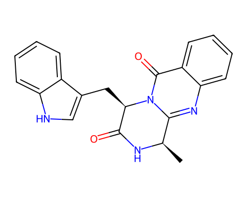

Aspergillus fumigatus SCSIO 41012
- Collection location
- Indian Ocean
- Ocean / sea
- Indian Ocean
- Sampling depth
- 3614 m
- Reported coordinates
- 7.157286, 89.073778
DOI 10.3390/molecules23092379 ↗ · PubMed 30231470 ↗
PDF p4 compound5; p5 Fungal Material
Recorded organism, strain, collection context and compound-linked source evidence.
A source profile groups recorded name variants. Primary-source review, strain identification and sequence verification are separate evidence decisions.
Compound activities are not automatically attributable to this strain, sample or source publication.
| Structure | Compound | Formula | MW (g/mol) | Reported source depth | Classification | Activity records | Admitted evidence rows |
|---|---|---|---|---|---|---|---|
 Structure image unavailable Structure image unavailable | Epi-aszonalenin AConnections → | C25H25N3O3 | 415.493 g/mol | 3614 m 3614 m | Alkaloid | 19 | 12 |
 Structure image unavailable Structure image unavailable | Fumigatoside EConnections → | C21H16N4O3 | 372.384 g/mol | 3614 m | Alkaloid | 11 | 0 |
 Structure image unavailable Structure image unavailable | Fumiquinazoline CConnections → | C24H21N5O4 | 443.463 g/mol | 3614 m 3614 m | Alkaloid | 12 | 1 |
 Structure image unavailable | Fumiquinazoline GConnections → | C21H18N4O2 | 358.401 g/mol | 3614 m | Alkaloid | 12 | 4 |
 Structure image unavailable Structure image unavailable | Helvolic acidConnections → | C33H44O8 | 568.707 g/mol | 3614 m | Terpenoid | 33 | 22 |
Up to two results per compound are shown. Open the compound record for all results, conditions and restrictions.
Shared cited references are prioritized where available. A shared reference does not establish a strain-specific assay or the same experimental sample.
| Product | Recorded results | Result evidence |
|---|---|---|
| Epi-aszonalenin A | Acinetobacter baumannii ATCC 19606 MIC = 50 ± 0.074 μg/mL Evidence review pending Shared cited reference; experimental attribution unconfirmed Acinetobacter baumannii ATCC 15122 MIC = 6.25 ± 0.09 μg/mL Evidence review pending Shared cited reference; experimental attribution unconfirmed | |
| Fumigatoside E | Acinetobacter baumannii ATCC 19606 MIC = 12.5 ± 0.042 μg/mL Evidence review pending Shared cited reference; experimental attribution unconfirmed Acinetobacter baumannii ATCC 15122 MIC = 6.25 ± 0.035 μg/mL Evidence review pending Shared cited reference; experimental attribution unconfirmed | |
| Fumiquinazoline C | Acinetobacter baumannii ATCC 19606 Table 3 em dash; numeric MIC not reported, threshold not inferred Evidence review pending Shared cited reference; experimental attribution unconfirmed Acinetobacter baumannii ATCC 15122 Table 3 em dash; numeric MIC not reported, threshold not inferred Evidence review pending Shared cited reference; experimental attribution unconfirmed | |
| Fumiquinazoline G | Acinetobacter baumannii ATCC 19606 Table 3 em dash; numeric MIC not reported, threshold not inferred Evidence review pending Shared cited reference; experimental attribution unconfirmed Acinetobacter baumannii ATCC 15122 MIC = 6.25 ± 0.083 μg/mL Evidence review pending Shared cited reference; experimental attribution unconfirmed | |
| Helvolic acid | Acinetobacter baumannii ATCC 19606 Table 3 em dash; numeric MIC not reported, threshold not inferred Evidence review pending Shared cited reference; experimental attribution unconfirmed Acinetobacter baumannii ATCC 15122 Table 3 em dash; numeric MIC not reported, threshold not inferred Evidence review pending Shared cited reference; experimental attribution unconfirmed |
Repeated source records are grouped with their associated compounds.
Associated compounds: Epi-aszonalenin A
Associated compounds: Epi-aszonalenin A, Fumigatoside E, Fumiquinazoline C, Helvolic acid
Associated compounds: Fumiquinazoline C
Associated compounds: Fumiquinazoline G